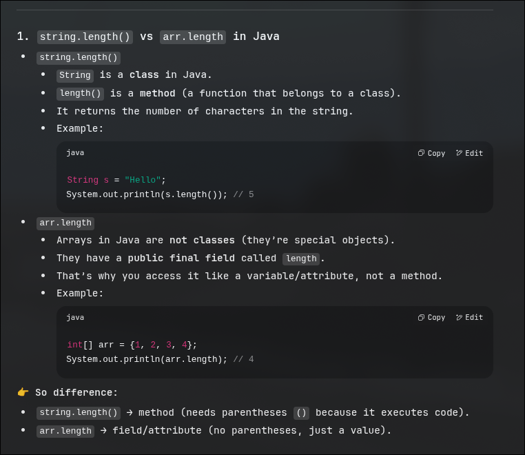

<Arraryname>/length| name | 1stBlock | 2ndBlock |
|---|---|---|
| array | reference | length |
ex:
primitive data typed str passed by values.
that are derived or constructed using primitve data types
ex:
Non primitive data types are stores and manipulated as call by reference so you can pass references to functions and no need to specify a particular value
! [WARNING] The array needs to be sorted for binary search to work.
[NOTE] when performing a function , make sure to make a return type , void is problematic -- [see searchingInArrays.problematic]
also note the power ofreturnstatement.
you select the first index at every indices and find the minimum value in the array for that place
you are selecting consecutive indices and swapping if the smaller index holds a greater value
assume that the first index is sort and from the second index take the first value and compare with the indices before it and place it , keep increasing the index of the assumption of sorted part
can be stores in two way -
char arr[]={'H','E','L','L','O'};
String str="Hello"; // string pool [will learn about it further]
String str1="";
System.out.println(str1.length()+" "+str.charAt(0))
System.out.println(str1 + str2)
System.out.println(str1.equalts(str2) );
str1=str1.concat(str2);
System.out.println(str1.comapreTo(str2));
// return ascii difference between those values
System.out.println(str.contains(str2));
System.out.println*(str.substrin(3));
// give the starting index from where you want the substring
System.out.println*(str.substrin(3,4));
// start , end (end is exclusive)
str3=s.next(); // delimiter is space here , the remaining part after the delimiter is kept in the console waiting for the next function to take it as input.
System.out.println(str3+" "+str3.length);
str4=s.nextLine(); // delimiter is \n here , now only takes what ever is remaining in the console
System.out.println(str4+" "+str4.length);
# write code for the following as a practise
where i is n and you store the value of i in a new string and decrement i
where i is 0 and keeps incrementing till less than str.length. and prepends every character it find ,
recstr=str.charAt(i) + revstr
string str="abc"; // string pool
String str1 = new String("abc") // object : value string
char str2 = new char[10] ; // object :value string
str.length() , as it is a primitive type , generally non primitive types like array have arr.length Difference between length() and length and String and char [class] [data type]

str1 here is the reference in the stack and "abc" stored is the value stored in the heap which is being referred to by the stack value [i.e. address of ] str1.
while str is creating a new value in the heap [creating - because no value was present before that matched that value required by str] which is called as string pool.
The concept of string pool is in java cuz - when another string called for the same value - it will just refer to the heap location.
# So yes, basically string pool is in heap.
A substring is a subset of a string whose order / sequence is maintained.
formula for total number of sub strings = sum of n natural numbers = n(n+1)/2
use str.equals(str2)
instead of str == str2 as this way it doesn't no compare and the string but the address these variables refers to , This condition only occurs when one of them is a non primitive type as primites are called by values - non primitve way of declaring a string is by creating a new instance of the String class .
String buffer class is a special string class which makes string mutable , most commonly used operation - str.setCharAt(index,character)
String buffer is a non primitive data type so its a pass by reference + takes more space as it has data manipulation supportstr.append("character[s]") is what is available instead of str.concat(str2)
arr stores the length and reference to other sub-1D arrays ,sum+=arr[i].length{% raw %}
int[][] arr = {{1,2},{3,4,5}};
{% endraw %}
This short hand declaration is allowed only at the time of declaring the array and not later i.e.
{% raw %}
int[][] arr= new int[10][10];
arr[][] = {{1,2},{3,4,5}} // not possible
arr[0][] = new int[]{1,2}; // instead use this
arr[1][] = new int[]3,4,5; // This is called as jagged arrray
{% endraw %}
int [][] arr = new int[5][];
System.out.println(arr); // returns a value since the array is referenced somewhere in the memory that references 5 more arrays
System.out.println(arr[0]);// return null as no address is referenced for the 1st sub-1Darray of main 2D-array
System.out.println(arr[0][1]);// since there is no reference to the 1st array , the second element of the first array is NULL and hence could return a null pointer exception
int arr[][] = new int[5];
System.out.println("5 arrays declared whose reference is : "+arr);
for(int i=0;i<5;i++){
arr[i] = new int[3]; // or any value desired
// i th array of j elements have been decalred
}
for(int i=0;i<5;i++){
for(int j=0;j<arr[i].length;j++){
System.out.println(arr[i][j]);
}
}